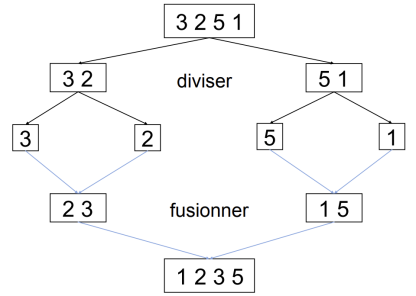

DIVISER POUR REGNER¶
L’approche diviser pour régner¶
L’idée est de séparer le problème initial en des problèmes semblables mais avec une taille plus petite, puis de résoudre (de façon récursive) ces problèmes et enfin de combiner les solutions obtenues pour obtenir la solution du problème initial.
Il y aura donc trois étapes essentielles:
diviser le problème en problèmes plus petits;
régner en résolvant de manière récursive les problèmes plus petits;
combiner (on dit aussi fusionner) les solutions des sous-problèmes pour obtenir la solution du problème initial.
Application 1: la recherche dichotomique¶
Le problème¶
Rappel du problème de 1re NSI: il s’agit de déterminer si une valeur v appartient à un tableau t trié. Ce problème a été résolu de manière itérative (voir cours 1re sur github.
Adoptons une approche diviser pour régner.
Diviser
Comme le tableau est trié, on peut le “couper” en deux pour y effectuer la recherche. Si on travaille avec des indices g et d, le milieu se situe à \(m=\dfrac{g+d}{2}\).
Régner
Il s’agit d’effectuer la recherche dans une partie du tableau qui est de taille plus petite que le tableau original.
Combiner
Lors d’une recherche, si v est trouvé, on renvoie son indice. Dans le cas d’un tableau vide, on renvoie None.
Illustration de la situation après quelques appels récursifs
__________________________________________
| | | |
| éléments < v | ........... | éléments > v|
|__________________________________________ |
^ ^ ^
| | |
0 g d
Une solution¶
def cherche_dans_tableau(t, v, g, d):
"""
cherche v dans le tableau t, entre les index g et d; renvoie l'index si trouvé, None sinon.
t: tableau
v: valeur à chercher
g, d: index (entiers naturels)
"""
if g > d:
return None
m = (g + d) // 2
if v > t[m]:
return cherche_dans_tableau(t, v, m+1, d)
if v < t[m]:
return cherche_dans_tableau(t, v, g, m-1)
else:
return m
def recherche_dichotomique(t, v):
"""
renvoie l'index de v dans t si trouvé, None sinon
"""
return cherche_dans_tableau(t, v, 0, len(t)-1)
# Exemple d'appel
t = [1,7,8,9,12,15,15,22,30,31]
print(recherche_dichotomique(t, 15))
5
Remarque: le programme termine car on peut exhiber un variant de boucle: \(d-g\). Il s’agit d’une grandeur entière, strictement positive et qui décroit à chaque appel récursif (voir illustration ci-dessus).
Application 2: le tri fusion (voir TP)¶
Le problème initial¶
Il s’agit de trier une liste chaînée d’entiers, par ordre croissant. Plusieurs méthodes de tri peuvent être envisagées (tri par sélection, tri par insertion). On choisit ici une approche diviser pour régner.
La liste sont des instances de la classe Cell vue au premier trimestre.
class Cell:
""" Classe cellule pour liste chainée"""
def __init__(self, v, s):
self.val = v
self.suiv = s
# Exemple
lst1 = Cell(2, Cell(10, Cell(5, Cell(-4, Cell(0, Cell(1, None))))))
Approche diviser pour régner¶
Diviser¶
Il s’agit dans un premier temps de “couper” la liste originale en deux listes de taille égale (ou presque dans le cas d’un nombre impair d’éléments).
Il existe plusieurs façon de résoudre ce problème (voir TP), on présente ici une version ne nécessitant pas de calcul de taille de liste au préalable.
def coupe_v3(lst):
"""
renvoie deux listes l1 et l2 issues de lst
"""
l1, l2 = None, None
while l is not None:
# les éléments sont mis alternativement dans l1 puis l2
temp = l1
l1 = Cell(lst.val, l2)
l2 = temp
lst = lst.suiv
return l1, l2
Régner¶
Après avoir réduit les listes à un élément, il devient facile de les trier: une liste à un élément est forcément triée !
Combiner¶
Il s’agit maintenant de “fusionner” les solutions des sous problèmes. Concrètement, on écrit une fonction fusion qui prend deux listes en paramètres et qui renvoie une liste, triée par ordre croissant.
def fusion(l1, l2):
"""
renvoie une liste contenant les éléments de l1 et de l2, triés par ordre croissant.
"""
if l1 is None: return l2
if l2 is None: return l1
if l1.val < l2.val:
return Cell(l1.val, fusion(l1.suiv, l2))
else:
return Cell(l2.val, fusion(l1, l2.suiv))
L’implémentation de l’algorithme du tri fusion, utilisant une approche diviser pour régner en python, s’écrit alors:
def tri_fusion(lst):
"""
"""
# Cas de base: liste contenant 1 élément
if lst.suiv is None:
return lst
# Cas récursif
left, right = coupe_v3(lst)
return fusion(tri_fusion(left), tri_fusion(right))
Illustration¶

Efficacité¶
Voici les relevés effectués sur des listes de tailles différentes, triées soit avec l’algorithme du tri sélection soit avec le tri fusion.
Taille |
Tri sélection |
Tri fusion |
|---|---|---|
1000 |
0.06 s |
0.01 s |
2000 |
0.13 s |
0.03 s |
4000 |
0.44 s |
0.05 |
8000 |
1.78 |
0.11 s |
16000 |
6.79 |
0.29 s |
Il apparaît clairement que le tri fusion est nettement plus performant que le tri sélection lorsque la taille du problème augmente.
Une étude approfondie de cet algorithme montre que sa complexité en temps est \(\mathcal{O}(n\log{}n)\).